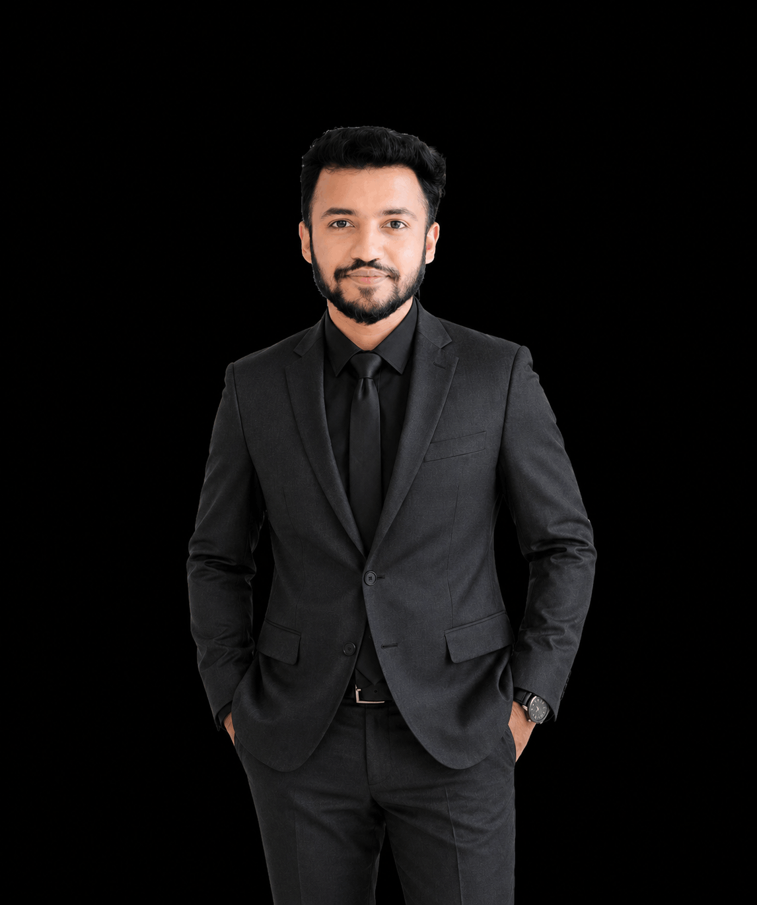
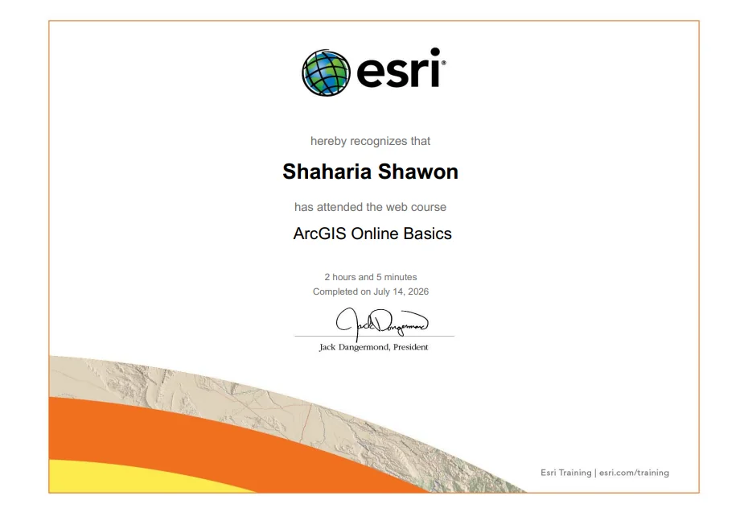
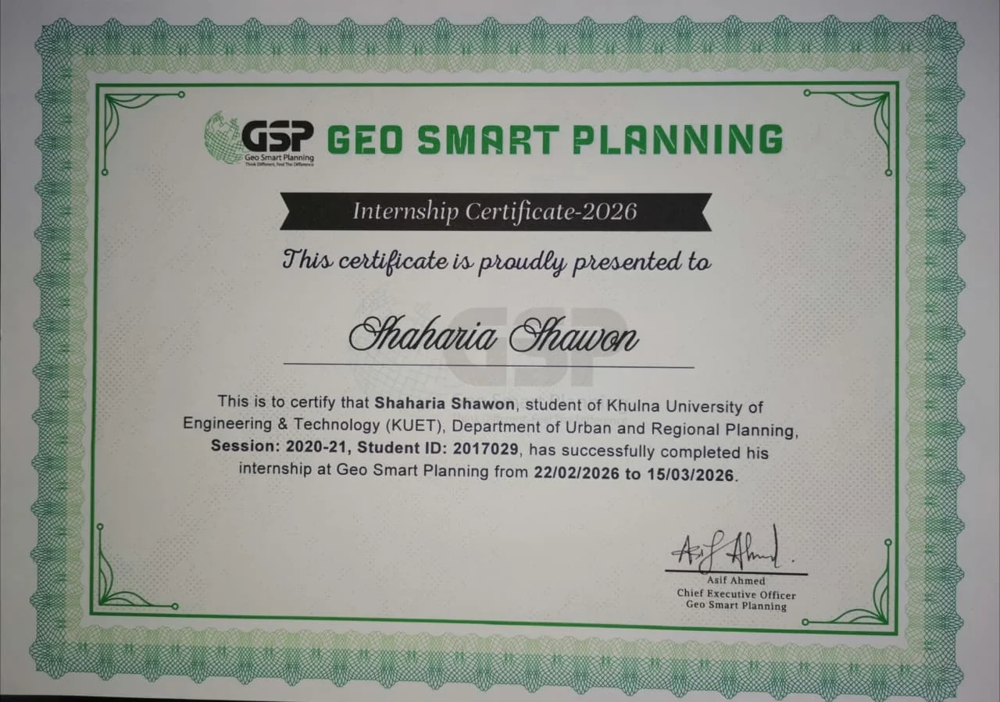
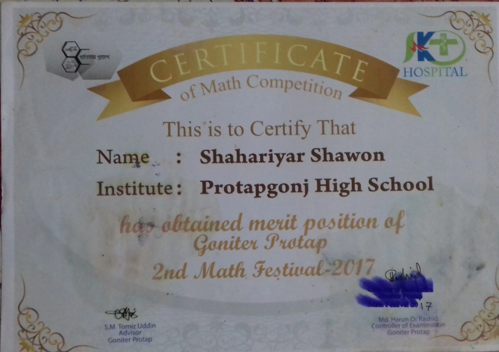

Urban & Regional Planning Student · GIS & Remote Sensing Enthusiast
Final-year BURP student at KUET, specializing in GIS-based spatial analysis, remote sensing, and urban-environmental planning. Passionate about applying data-driven approaches to solve real-world planning challenges.

I am a final-year student in Urban and Regional Planning at Khulna University of Engineering & Technology (KUET), with a focus on GIS, remote sensing, and spatial data analysis. My academic journey has equipped me with robust technical skills and hands-on experience in tackling complex urban and environmental planning problems.
My research interests span ecological protection and nature-based solutions. I am driven by the belief that data-driven spatial analysis can create more resilient, sustainable, and equitable cities.
Beyond academia, I have interned at Geo Smart Planning, where I applied GIS digitization and georeferencing to real-world city profiling projects. I am now completing my undergraduate thesis on delineating Ecological Protection Redlines in Khulna using GIS and remote sensing.
KUET · 2022–Present · CGPA: 3.11/4.00 Overall · 3.55 GPA Last Semester · 7 of 8 semesters
Hamdard Public College, Dhaka Board · 2018–2020 · GPA: 5.00/5.00
Protapgonj High School, Cumilla Board · 2016–2018 · GPA: 4.78/5.00
ArcGIS, QGIS, Google Earth Engine, spatial modeling
Satellite image processing, NDVI, LST, UHI, land cover
Land use, transportation, environmental profiling
SPSS, Random Forest, GWR, GTWR, regression analysis
Nature-based solutions, ecological assessments, EPR
AutoCAD, Canva, MS PowerPoint, landscape design

Prepare a Development Project Proposal to improve climate-resilient healthcare services and safe community water supply for coastal communities in Khulna & Satkhira.
Prepared a comprehensive DPP with a structured implementation roadmap, financing strategy (BDT 239.3M, 36-month), monitoring framework & sustainable development recommendations.
To assess the socio-economic, environmental, and institutional conditions of Atra Village through participatory planning approaches.
Identified key rural development challenges and opportunities, providing community-driven planning recommendations for sustainable development.
To investigate long-term PM₂.₅ distribution and its driving factors across Dhaka Division.
Identified pollution hotspots and quantified the impacts of environmental and socioeconomic factors.
To analyze the spatial distribution and adequacy of public facilities using GIS and identify service gaps for equitable rural planning.
Identified significant spatial inequalities and produced thematic maps supporting equitable rural service distribution.
To develop sustainable nature-based solutions for urban environmental problems in Khulna City Corporation.
Proposed environmentally sustainable interventions for improving urban resilience.
To evaluate environmental conditions of selected wards using geospatial indicators.
Generated environmental profile maps highlighting air quality, vegetation, urban heat island, and built-up conditions.
To assess roadway performance and transportation infrastructure conditions.
Identified roadway deficiencies and recommended transportation improvements.
To evaluate rural development status using socioeconomic and infrastructure indicators.
Identified development gaps and proposed sustainable rural development strategies.
To evaluate the feasibility of a water-based passenger transportation system.
Developed a proposed water transport network and optimal terminal locations.
To identify urban resource gaps and formulate sustainable management strategies.
Prioritized ward-level development issues and proposed sustainable planning interventions.
To redesign the Zia Hall area as a sustainable and inclusive urban park.
Developed an environmentally sustainable urban park design featuring green infrastructure, pedestrian facilities, and recreational spaces.
To prepare a comprehensive neighborhood development plan.
Designed a neighborhood master plan including road hierarchy, zoning, public facilities, and open spaces.
This thesis delineates Ecological Protection Redlines for Khulna city by combining satellite-derived datasets with spatial modeling — assessing soil & water conservation capacity, ecological importance and sensitivity, then overlaying protected areas to define priority conservation boundaries that guide sustainable land-use planning.
Applied GWR, GTWR, and Random Forest models to analyze two-decade PM₂.₅ trends. Assessed meteorological and socio-economic drivers using satellite-derived environmental datasets.
Integrated GIS and remote sensing analysis for comprehensive urban environmental profiling, including air quality, UHI, vegetation cover, and NBS feasibility with economic evaluation.
Planned research on coastal vulnerability assessment, flood risk mapping, and climate adaptation strategies for the Khulna-Sundarbans coastal zone using multi-criteria GIS analysis.
Investigating urban heat island intensification patterns in relation to LULC changes using Landsat imagery, GEE, and spatiotemporal regression models to support climate-sensitive urban planning.

Certified completion of GIS internship covering digitization, georeferencing, spatial data management, and Healthy City profiling workflows.
Certificate recognizing academic tutoring services in Physics, Chemistry, and Mathematics for SSC, HSC, and Engineering admission candidates.
Awarded by Khulna University of Engineering & Technology (KUET) for academic performance and technical merit.
KUET · AcademicAchieved merit position in inter-school mathematics competition organized by Goniter Protap, demonstrating analytical excellence.
2017 · Inter-School CompetitionAwarded Junior School Certificate scholarship by Protapgonj High School for outstanding academic performance.
2008–2010 · Protapgonj High SchoolAchieved a perfect GPA of 5.00 in Higher Secondary Certificate from Hamdard Public College under Dhaka Board.
2020 · Hamdard Public College, DhakaElected to the Amar Ekushey Hall Committee at KUET, contributing to student governance and residential management.
Jan 2026 – Present · KUETSuccessfully completed professional GIS internship at Geo Smart Planning, contributing to real-world spatial data workflows and Healthy City profiling projects.
Geo Smart Planning · Professional
Inter-school mathematics competition certificate awarded for merit-level performance.
Open to research collaborations, internship opportunities, GIS projects, and academic partnerships.
| Class | Area Percentage |
|---|---|
| Very Low Capacity | 22.49% |
| Low Capacity | 26.69% |
| Moderate Capacity | 23.75% |
| High Capacity | 27.07% |
| Class | Area Percentage |
|---|---|
| Very Low Capacity | 22.05% |
| Low Capacity | 21.16% |
| Moderate Capacity | 22.90% |
| High Capacity | 33.89% |
| Class | Percentage |
|---|---|
| Generally Important | 23.61% |
| Moderately Important | 25.94% |
| Important | 25.56% |
| Extremely Important | 24.89% |